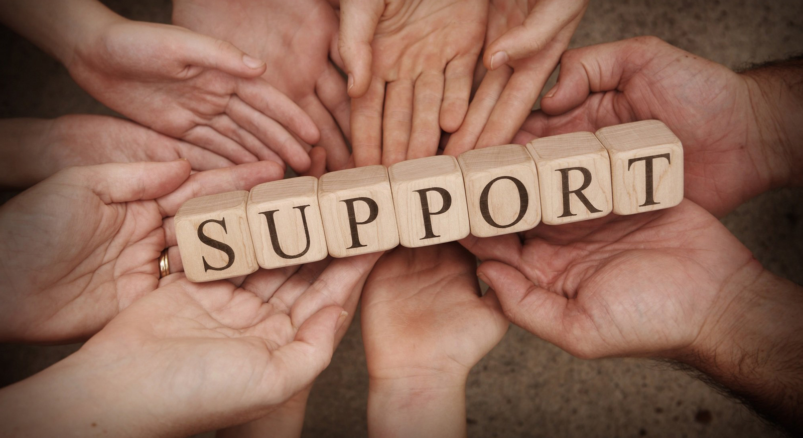
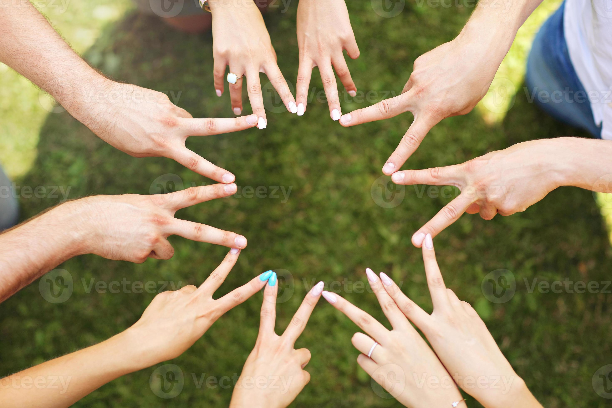
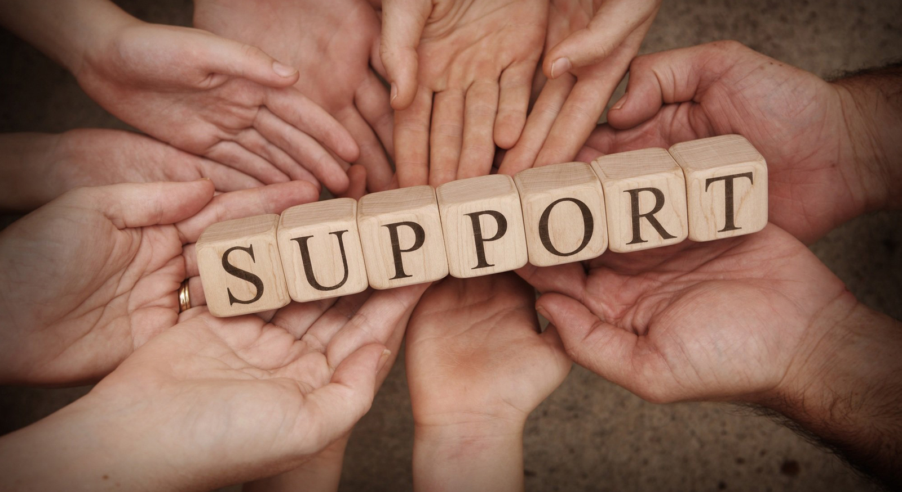
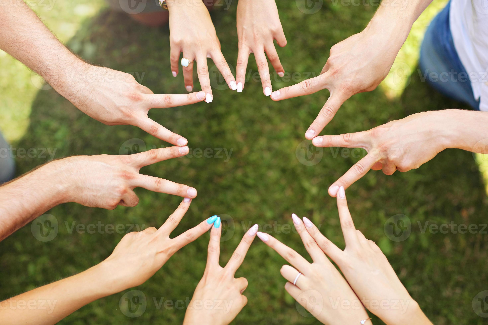

Positive Connection and Support
Why Positive Connections Matter
In a world increasingly shaped by digital interaction, forming strong, supportive relationships online can significantly improve emotional and social well-being.
Benefits of Healthy Online Relationships:
- Emotional Resilience: Receiving positive feedback or comfort during hard times can reduce anxiety and boost self-esteem.
- Safe Spaces to Share: Online groups often allow teens to express feelings without judgment — whether it’s about school stress, identity, or personal challenges.
- Collaborative Learning: Connecting with classmates or mentors online enables shared learning experiences and support for schoolwork or personal growth.
- Global Friendships: Teens can make friends from around the world, expanding their cultural awareness and empathy.
Real-Life Example
A group of teens struggling with anxiety formed a private Discord server where they check in with each other every evening. Over time, this group became a lifeline of daily motivation and care.
How to Build Positive Connections Online
Building a positive online presence starts with kindness and respect. Listen, encourage others, and engage in communities that uplift you. Avoid toxic spaces, block harmful content, and always be mindful of how your words affect others.
 


